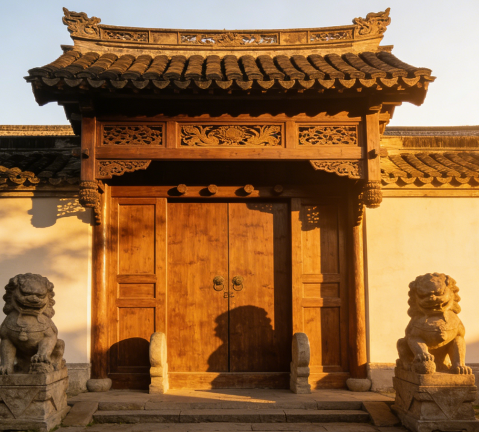

Linyi, known as the "City of Calligraphy" and the "Hometown of Wang Xizhi," is a prefecture-level city in southern Shandong Province. With a history spanning over 2,500 years, it sits at the intersection of the Yi River and Meng Mountain, where ancient Chinese civilization flourished. The city is renowned for its revolutionary heritage, stunning natural landscapes, and vibrant folk traditions that continue to inspire visitors from around the world.

Historical LandmarksExplore the ancient battlefields, calligraphy heritage sites, and revolutionary memorials that define Linyi's rich history across millennia. From the Former Residence of Wang Xizhi to the Menglianggu Battle Memorial, these landmarks tell the epic story of a city that has been at the heart of Chinese civilization for over 2,500 years.
View Landmarks →Discover the vibrant traditions of shadow puppetry, Liuqiu opera, paper cutting, and the legendary Yimeng spirit of the mountain people. Linyi's folk customs are a living tapestry of cultural heritage that continues to thrive across generations.
View Folk Customs →Uncover the authentic flavors of Linyi, from traditional Sa soup to crispy Jianbing pancakes and hearty mountain delicacies. The region's cuisine tells the story of its land and people through centuries of culinary heritage.
View Cuisine →